Sylvain Raux
Communication · Rédaction · Création de contenu · Vidéo · SEO · IA
Avant toute chose
Pas de long discours. Appuyez sur play et en deux minutes, vous saurez qui je suis, d'où je viens, et pourquoi je suis là.
« Tout a commencé par un œil derrière un objectif… »
Chapitre 1
Avant d'écrire, j'ai appris à voir. Diplômé en photographie et en graphisme, je compose avant de rédiger. Voici ce que mon œil a produit : des affiches événementielles aux toiles acryliques, en passant par la direction artistique.
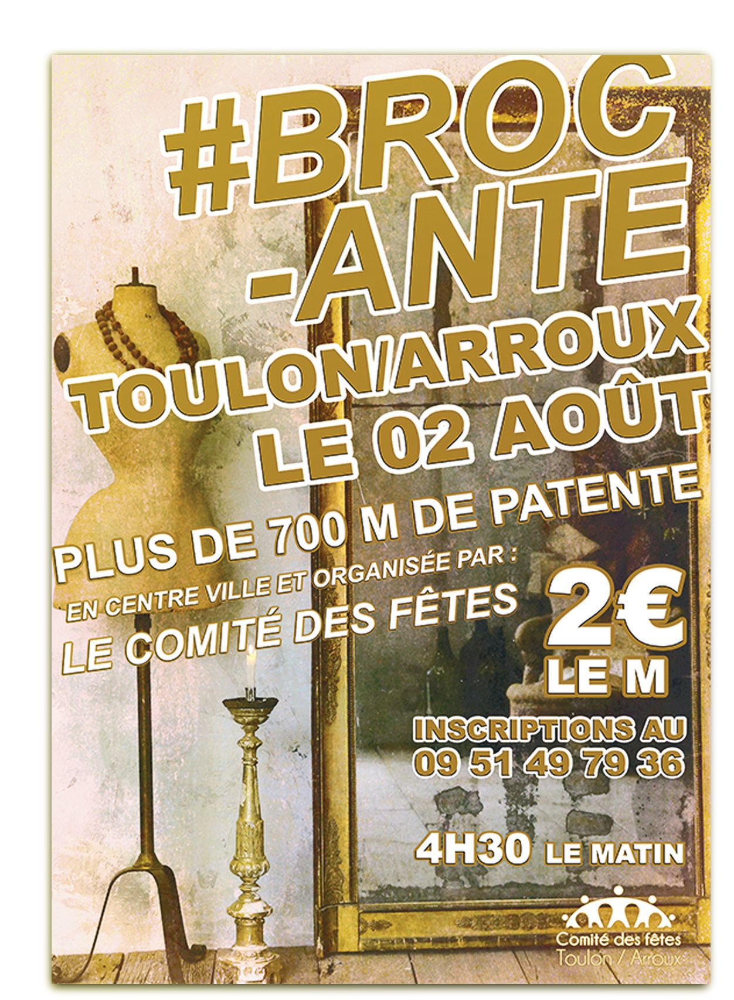
Affiche événementielle
Conception d'une affiche A4 pour un événement local. Composition, typographie et hiérarchie visuelle.
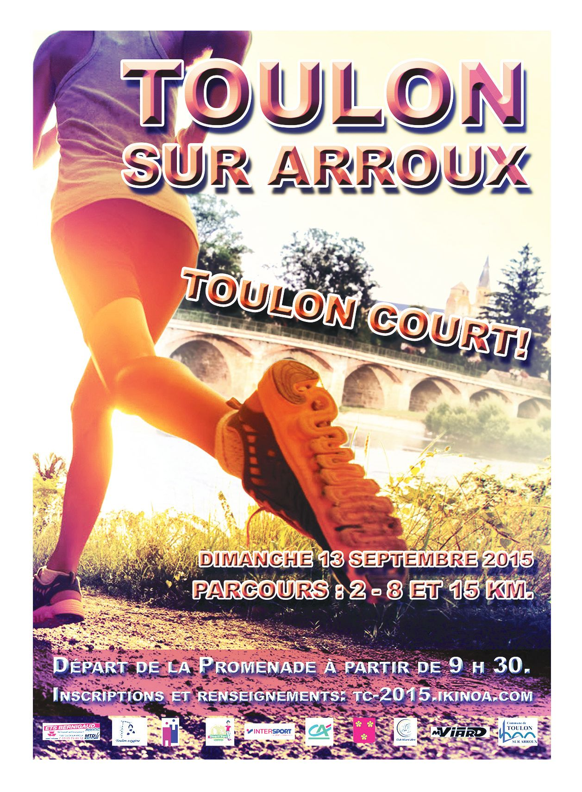
Affiche événementielle
Affiche A4 pour une course sportive. Dynamisme, couleurs vives, lisibilité à distance.
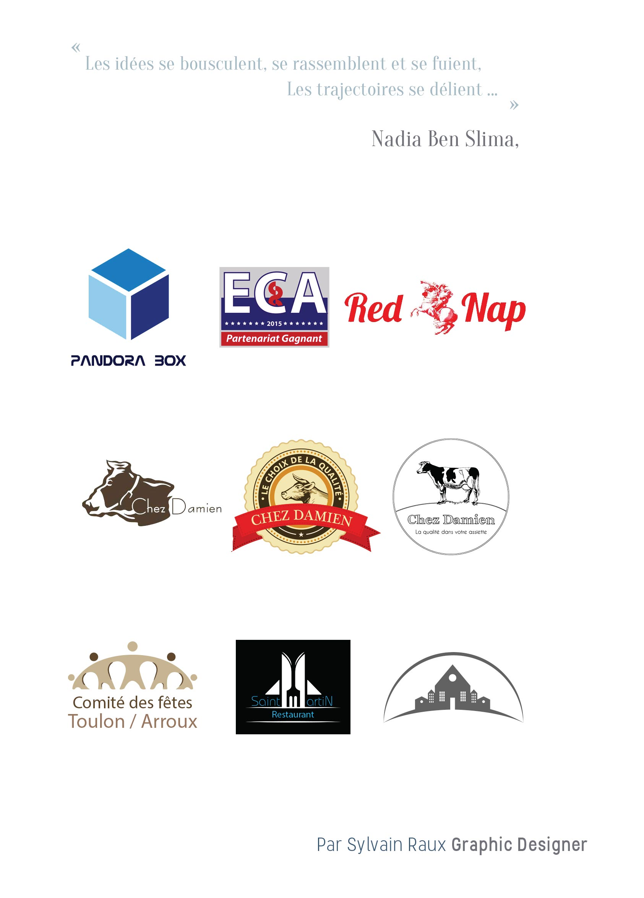
Identité visuelle
Déclinaison d'un logotype sur différents supports et fonds. Cohérence de marque.
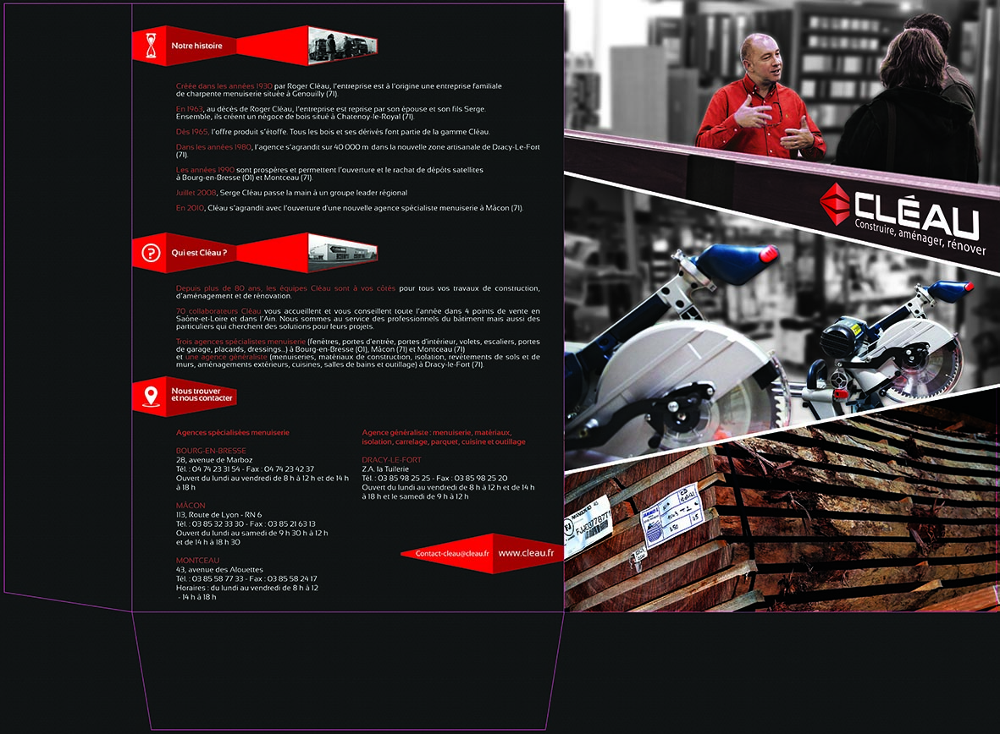
Print corporate
Chemise à rabats pour documents institutionnels. Mise en page, choix typographique et finitions print.
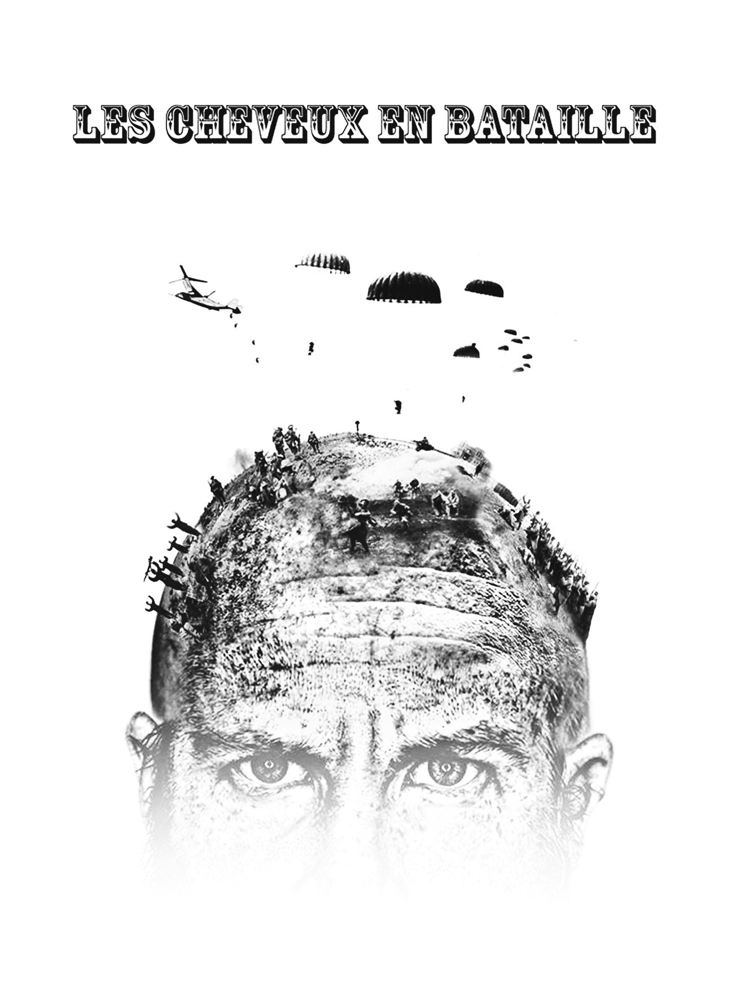
Création personnelle
Photomontage jouant sur l'expression française avec un crâne chauve transformé en champ de bataille. Quand le graphisme rencontre l'humour.
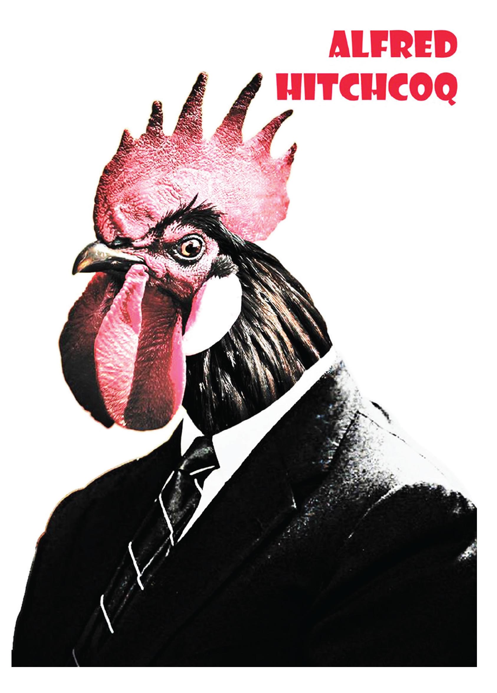
Création personnelle
Photomontage et jeu de mots : quand le maître du suspense rencontre la basse-cour. L'humour au service du graphisme.
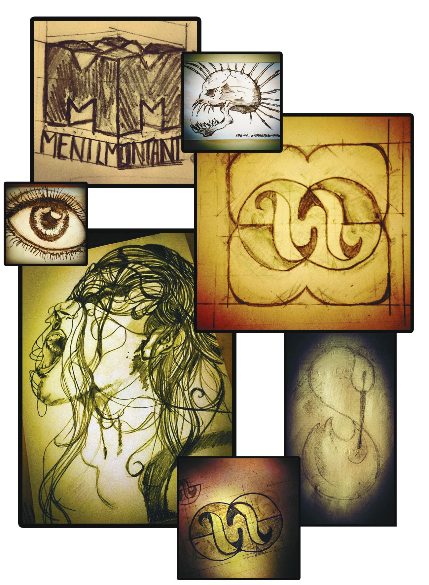
Dessin — CAP Photo
Série de croquis réalisés à main levée. Le trait avant le pixel : là où tout commence.
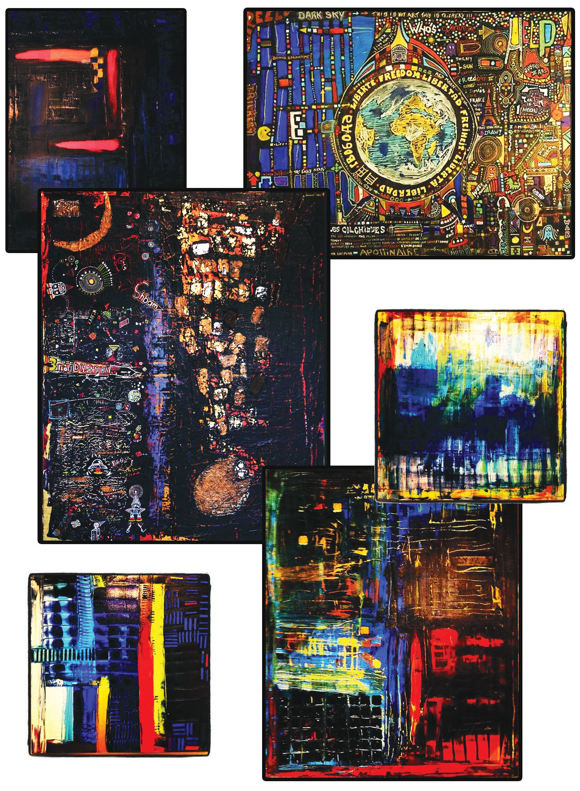
Peinture
Travaux picturaux sur toile entre acrylique et marqueurs Posca. La couleur brute, sans filtre Insta.
Mise en page & recherche — Bachelor Marketing
Analyse SWOT, forces de Porter, PESTEL et 9P Marketing Mix pour la startup Genario (outil d'aide à l'écriture par IA). Recherche, analyse et mise en page intégralement réalisées par mes soins dans le cadre de mon Bachelor Marketing & Communication Digitale.
« Mais une image sans histoire, ça ne raconte rien… »
Chapitre 2
Rédacteur web depuis près d'une décennie, j'écris pour informer, convaincre et référencer. Du correspondant local de presse au contenu SEO optimisé, chaque mot trouve sa place.
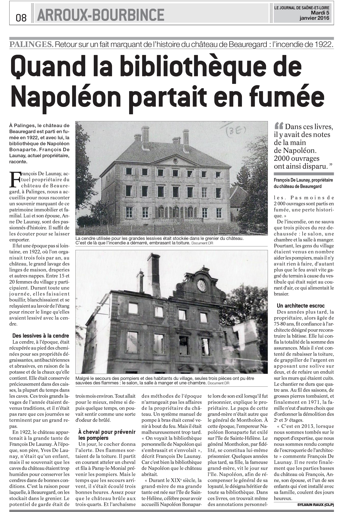
Presse locale — Le Journal de Saône-et-Loire
Articles signés pour le JSL en tant que CLP. Couverture d'événements locaux, rigueur journalistique, respect des délais de bouclage.
Rédaction SEO — Indeed
Article long format optimisé SEO pour Indeed France. Sujet de niche exigeant recherche approfondie et vulgarisation pour un public large. Rédaction selon cahier des charges strict.
Contenu marketing — AR Factory
Contenu marketing rédigé pour AR Factory. Respect du brief, du tone of voice et de la ligne éditoriale. Adapter sa plume au client, pas l'inverse.
E-commerce — Shopify
Création complète d'un site e-commerce Shopify : webmastering selon cahier des charges, template Warehouse, fiches produits, intégration et administration du site.
« Les mots posés, il fallait les orchestrer… »
Chapitre 3
Communiquer ne s'improvise pas. Planning éditorial, stratégie de contenu, marketing relationnel : voici les coulisses de la mécanique.
All Clad — Groupe Seb
Extrait du planning mensuel conçu pour la marque All Clad. Chaque jour est associé à un objectif stratégique (engagement VDI, fidélisation client, conversion), un type de contenu et un canal de diffusion.
| Lundi | Mardi | Mercredi | Jeudi | Vendredi | Samedi | Dimanche |
|---|---|---|---|---|---|---|
| 2 | 3 | 4 | 5 | 6 | 7 | 8 |
| Appartenance VDI | Contact VDI / Client | Contact VDI / Client | Contact VDI / Client | |||
| Post motivation | Recette du mercredi | Citation cuisine | Portrait cuisinier | |||
| Photo-podcast. Remerciements & encouragements. | Vidéo réel insta, TikTok, short YouTube 1 min. Recette du veau. | Infographie. « La cuisine est un art… » Robert Burton | Infographie. Portrait Marc Veyrat. | |||
| RS + Newsletter | RS + Ebook | RS | RS |
All Clad — Groupe Seb
Vue d'ensemble de la stratégie CM déployée auprès des VDI et clients : engagement, appartenance, valorisation, et suivi par canal.
| Engagement | Valoriser | Ventes | Présentation | Recyclage |
|---|---|---|---|---|
| Créer du lien avec les VDI et générer de l'interaction par le divertissement et l'éducatif | Posts bienveillants, récompenses visant à mettre en avant les VDI les plus actifs | Posts subtils sur les offres, sans avoir l'impression de vendre | Représenter régulièrement All Clad et ses valeurs | Recycler les meilleurs contenus sous de nouveaux formats |
Genario
Lead nurturing, tunnel de conversion, CRM social, email automation, reporting — tout le parcours de fidélisation client documenté et mis en page.
Genario
Organisation interne, outils (Discord, Notion, Mixpanel), discours publicitaire, relations publiques, contexte culturel international et stratégie de contenu.
Audit digital complet, stratégie SEO locale, plan de contenu multi-entités, calendrier éditorial et chiffrage. Document conçu intégralement avec l'assistance de l'IA (Claude, Anthropic).
« Et quand la stratégie est posée, il faut porter la voix… »
Chapitre 4
Newsletters, e-books, lead magnets et c'est le contenu qui arrive directement dans la boîte mail. Du copywriting qui convertit.
All Clad — Groupe Seb · Newsletters Sendinblue/Brevo
Planning éditorial saisonnier : chaque mois sa thématique : tendance veggie en mai, apéritifs d'été en juin, coquillages & crustacés en juillet. Conception éditoriale, rédaction, visuels et CTA.
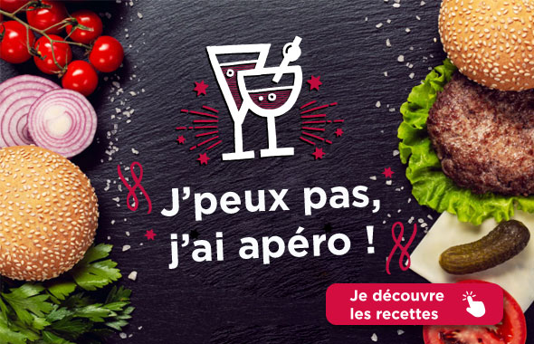
Juin — Apéritifs d'été
Lead magnet — Genario
Conception, rédaction et mise en page d'un e-book destiné à générer des leads qualifiés. Contenu à forte valeur ajoutée offert en échange d'un email. La base du nurturing.
« Et quand le texte ne suffit plus, j'allume la caméra… »
Chapitre 5
Devant et derrière la caméra. Voix off, cuisine en direct, montage, sous-titres, vidéo promotionnelle. Je gère la chaîne complète, de la prise de vue au rendu final.
All Clad — Groupe Seb
Moi en scène, en train de cuisiner. Voix off, réalisation, montage et sous-titres : toute la chaîne de production vidéo, seul.
Genario
Montage complet d'une interview vidéo pour Genario. Cadrage, rythme, transitions : la narration visuelle au service du contenu éditorial.
Vidéo promotionnelle
Vidéo promotionnelle produit. Réalisation et montage orientés conversion. Ou quand la vidéo devient outil de vente.
« Reste à connecter tout ça… intelligemment. »
Chapitre 6
L'IA générative, je ne me contente pas de l'utiliser : je la pilote. Pipelines d'automatisation, agents IA chaînés, publication autonome.
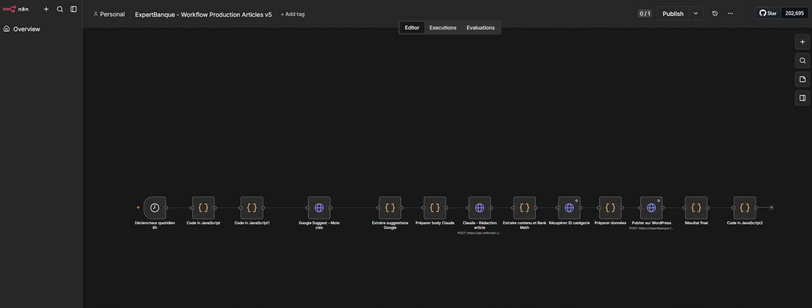
Automatisation — n8n · VPS · WordPress